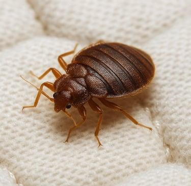
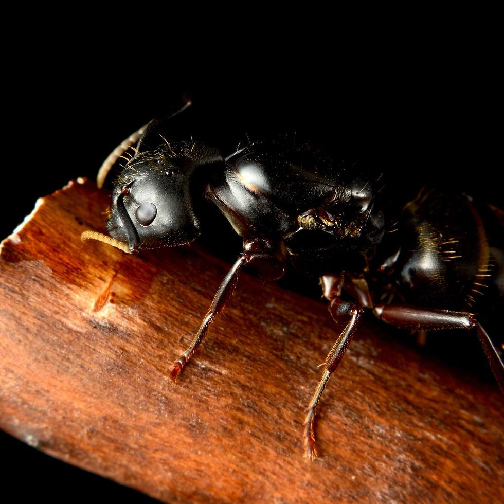
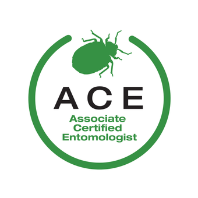
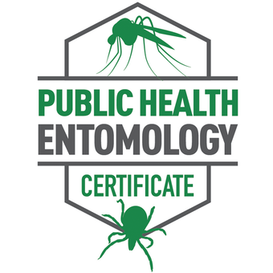

Independent Urban Entomology & IPM Consulting
Science-based answers to complex pest problems.
Objective evaluation, specimen-level identification, and practical solutions for businesses, pest management professionals, and property owners throughout the Northeast.
Patrick T. Mathe MSc · ACE · PHE

Our position
Mathe Entomology Consulting LLC provides independent urban entomology and integrated pest management consulting services throughout the Northeast. Combining advanced entomological training with fifteen years of professional pest management experience, we help businesses, pest management professionals, and property owners solve complex pest challenges through science-based evaluation and practical solutions.
0+
Years in professional
pest management
pest management
MSc
Advanced entomological
training
training
ACE · PHE
Associate Certified Entomologist
Public Health Entomologist
Public Health Entomologist
Northeast
Regional
service area
service area
What we do
Consulting services,
not pest control.
We don't sell treatments — we sell clarity. Every engagement is an independent, evidence-driven evaluation with findings you can act on.
-
01
Commercial IPM Audits
Independent, standards-based evaluation of integrated pest management programs — documentation, sanitation, exclusion, and service quality across your facilities.
-
02
Complex Pest Investigations
Root-cause fieldwork for persistent, unusual, or disputed infestations that resist routine service — methodical inspection, sampling, and analysis.
-
03
Technical Problem Solving
Entomological support for pest management professionals facing difficult accounts — protocol design, product strategy, and field troubleshooting.
-
04
Pest Identification
Specimen-level morphological identification with the biology and management context that turns a name into a plan.
-
05
Due Diligence Inspections
Pre-transaction pest risk assessments for acquisitions, leases, and property portfolios — know what you're buying before you buy it.
-
06
Quality Assurance Reviews
Objective review of service records, protocols, and outcomes — verifying that the program you pay for is the program you receive.
-
07
Regulatory & Compliance Consulting
Guidance on label compliance, documentation, and audit readiness for regulated environments and third-party standards.
Field guide
Know your adversary.

-

-

The consultant
Patrick T. MatheMSc · ACE · PHE
Patrick pairs advanced entomological training with fifteen years in professional pest management — from the crawlspace to the boardroom. As an independent consultant, he works for you, not for a treatment contract, which means every finding and recommendation is grounded in evidence rather than a sales quota.
He holds a Master of Science, the Associate Certified Entomologist (ACE) credential, and the Public Health Entomology (PHE) certification, and serves businesses, pest management professionals, and property owners across the Northeast.
- Independent — no products sold, no treatments performed
- Evidence-driven findings, documented and defensible
- Fluent in both field operations and regulatory language
Get in touch
Let's solve it.
Describe the problem, the property, and what's been tried. We'll tell you honestly whether a consultation will help.
1 (934) 226-8989 Email PatrickServing the Northeast United States · Remote review available nationwide